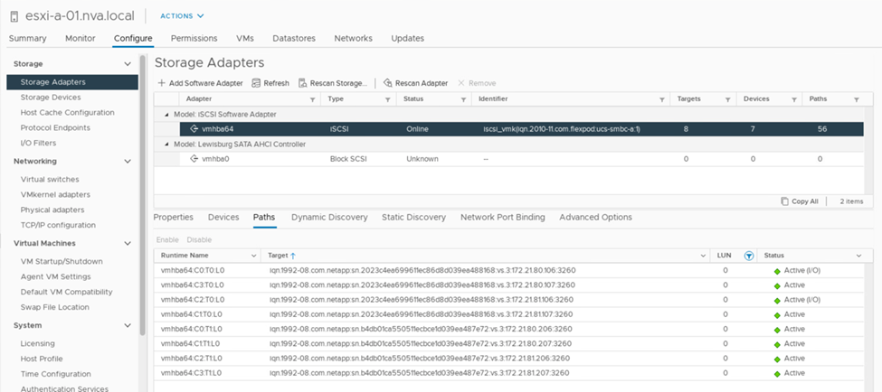
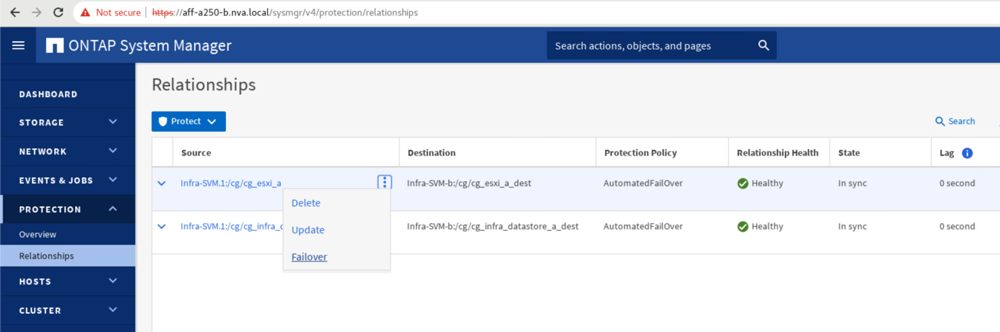
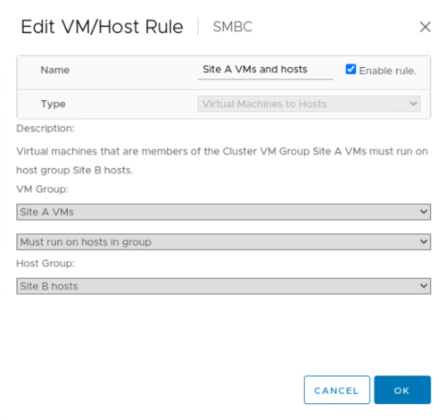
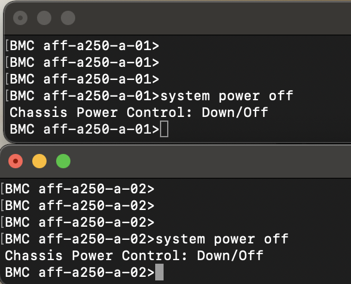
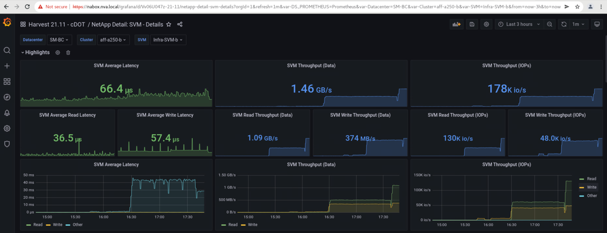
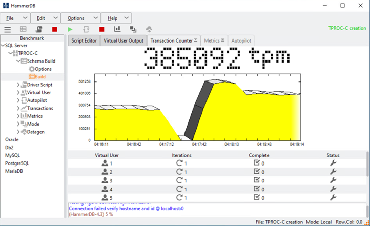

可解析度FlexPod
可解析度FlexPod
解決方案驗證：已驗證的案例
 建議變更
建議變更
《Datacenter SM - BC解決方案》FlexPod 可保護資料服務、以因應各種單點故障情況、以及站台災難。在每個站台上實作的備援設計可提供高可用度、而採用跨站台同步資料複寫的SMBC實作則可保護資料服務、避免單一站台在站台範圍內發生災難。已部署的解決方案已針對其所需的解決方案功能、以及解決方案設計用來保護的各種故障案例進行驗證。
解決方案功能驗證
我們使用各種測試案例來驗證解決方案功能、並模擬部分和完整的站台故障案例。為了盡量避免重複使用FlexPod Cisco驗證設計方案下現有的「功能不全的資料中心」解決方案、本報告的重點在於解決方案的「SM - BC」相關層面。我們提供一些一般FlexPod 的驗證功能、讓業者可以進行實作驗證。
針對解決方案驗證、在兩個站台的所有ESXi主機上、每個ESXi主機都會建立一個Windows 10虛擬機器。IOMMeter工具已安裝並用於產生I/O至兩個虛擬資料磁碟、這些磁碟是從共用的本機iSCSI資料存放區對應而來。設定的IOMMeter工作負載參數為8-KB I/O、75%讀取和50%隨機、每個資料磁碟有8個未完成的I/O命令。在執行的大多數測試案例中、持續執行IOMMeter I/O可表示案例並未導致資料服務中斷。
由於SMBC對資料庫伺服器等商業應用程式而言至關重要、 Windows伺服器2022虛擬機器上的Microsoft SQL Server 2019執行個體也包含在測試中、以確認當本機站台上的儲存設備無法使用、且遠端站台儲存設備上的資料服務在沒有應用程式的情況下恢復時、應用程式仍會繼續執行 中斷：
ESXi主機iSCSI SAN開機測試
解決方案中的ESXi主機已設定為從iSCSI SAN開機。使用SAN開機可簡化更換伺服器時的伺服器管理、因為伺服器的服務設定檔可與新的伺服器建立關聯、以便在不做任何其他組態變更的情況下啟動伺服器。
除了從站台的本機iSCSI開機LUN開機ESXi主機、當ESXi主機處於接管狀態或其本機儲存叢集完全無法使用時、也會執行測試來開機。這些驗證案例可確保ESXi主機依照設計正確設定、並可在儲存維護或災難案例中開機、以便進行災難恢復、以提供營運不中斷。
在設定SM至BC一致性群組關係之前、儲存控制器HA配對所裝載的iSCSI LUN有四條路徑、每個iSCSI架構有兩條路徑、視最佳實務實作而定。主機可以透過兩個iSCSI VLANs/Fabrics、連至LUN主機控制器、也可以透過控制器的高可用度合作夥伴連至LUN。
在設定了SM至BC一致性群組關係、並將鏡射LUN正確對應至啟動器之後、LUN的路徑數就會加倍。對於這項實作、從擁有兩個主動/最佳化路徑和兩個主動/非最佳化路徑、到擁有兩個主動/最佳化路徑和六個主動/非最佳化路徑、都是如此。
下圖說明ESXi主機存取LUN所需的路徑、例如LUN 0。當LUN連接到站台A控制器01時、只有透過該控制器直接存取LUN的兩條路徑會處於作用中/最佳化狀態、其餘六條路徑則為作用中/非最佳化狀態。

以下儲存設備路徑資訊的快照顯示ESXi主機如何看到兩種類型的裝置路徑。這兩個主動/最佳化路徑顯示為「主動（I/O）」路徑狀態、而六個主動/非最佳化路徑則僅顯示為「主動」。另請注意、「目標」欄會顯示兩個iSCSI目標和各自的iSCSI LIF IP位址、以便到達目標。

當其中一個儲存控制器因維護或升級而當機時、到達向下控制器的兩個路徑將不再可用、並以「讀取」的路徑狀態顯示。
如果一致性群組在主要儲存叢集上發生容錯移轉、無論是手動容錯移轉測試或自動災難容錯移轉、次要儲存叢集都會繼續為SMBC一致性群組中的LUN提供資料服務。由於LUN識別會保留下來、而且資料已同步複寫、因此所有受SMBC一致性群組保護的ESXi主機開機LUN仍可從遠端儲存叢集取得。
VMware VMotion與VM/主機關聯性測試
雖然通用FlexPod 的VMware Datacenter解決方案支援FC、iSCSI、NVMe和NFS等多種傳輸協定、FlexPod 但支援通常用於業務關鍵解決方案的FC和iSCSI SAN傳輸協定。此驗證僅使用iSCSI傳輸協定型資料存放區和iSCSI SAN開機。
若要允許虛擬機器使用來自任一SMBC站台的儲存服務、叢集中的所有主機都必須掛載來自兩個站台的iSCSI資料存放區、以便在兩個站台之間移轉虛擬機器、並在發生災難容錯移轉的情況下進行移轉。
對於在虛擬基礎架構上執行的應用程式、若不需要跨站台的SMBC一致性群組保護、也可使用NFS傳輸協定和NFS資料存放區。在這種情況下、在為VM分配儲存設備時必須謹慎小心、如此一來、業務關鍵應用程式就能正確使用受到SMBC一致性群組保護的SAN資料存放區、以提供營運不中斷。
下列螢幕快照顯示主機已設定從兩個站台掛載iSCSI資料存放區。

您可以選擇在兩個站台的可用iSCSI資料存放區之間移轉虛擬機器磁碟、如下圖所示。基於效能考量、讓虛擬機器使用本機儲存叢集的儲存設備來減少磁碟I/O延遲是最佳選擇。當兩個站台相距一定距離時、尤其如此、因為實體往返距離延遲約為每100Km距離1毫秒。

已執行虛擬機器的VMotion測試、測試在同一個站台及站台之間的不同主機、並已成功完成。在跨站台手動移轉虛擬機器之後、VM/主機關聯規則會啟動虛擬機器、並將其移轉回正常情況下所屬的群組。
計畫性儲存容錯移轉
在初始組態之後、應在解決方案上執行計畫性的儲存容錯移轉作業、以判斷解決方案在儲存容錯移轉之後是否正常運作。測試有助於識別可能導致I/O中斷的任何連線或組態問題。定期測試及解決任何連線或組態問題、有助於在實際發生站台災難時、提供不中斷的資料服務。規劃的儲存容錯移轉也可在排程的儲存維護活動之前使用、以便從不受影響的站台提供資料服務。
若要手動將站台A儲存資料服務容錯移轉至站台B、您可以使用站台B ONTAP 的系統管理器來執行此動作。
-
瀏覽至Protection（保護）> Relationships（關係）畫面、確認一致性群組關係狀態為「In Sync（同步）」。如果仍處於「同步」狀態、請等待狀態變成「同步中」、然後再執行容錯移轉。
-
展開來源名稱旁的點、然後按一下「Failover（容錯移轉）」。

-
確認容錯移轉以啟動行動。

在站台B System Manager GUI上啟動兩個一致性群組「CG_ESXi_a」和「Cm_infra_datastore_a」容錯移轉之後、這兩個一致性群組的站台A I/O就會移到站台B因此、站台A的I/O會大幅減少、如站台A系統管理員效能窗格所示。

另一方面、站台B系統管理員儀表板的「效能」窗格顯示、由於從站台A移至約130K IOPs的額外I/O服務、IOP顯著增加。 並達到約1GB/s的處理量、同時維持低於1毫秒的I/O延遲。

隨著I/O從站台A透明移轉至站台B、站台A儲存控制器現在可以停機以進行排程維護。完成維護工作或測試之後、將站台A儲存叢集恢復正常運作、請檢查並等待一致性群組保護狀態變更回「In sync」、然後再執行容錯移轉、將容錯移轉I/O從站台B傳回站台A請注意、站台停機時間越長、資料同步前所需的時間越長、一致性群組就會回到「同步中」狀態。

非計畫性儲存容錯移轉
發生實際災難或進行災難模擬時、可能會發生非計畫性的儲存容錯移轉。例如、請參閱下圖、其中站台A的儲存系統發生停電、觸發非計畫性儲存容錯移轉、站台A LUN的資料服務（受到SMBC關係保護）則從站台B繼續

若要模擬站台A的儲存災難、站台A的兩個儲存控制器都可以透過實體關閉電源開關來中斷控制器的電源供應、 或使用儲存控制器服務處理器的系統電源管理命令來關閉控制器。
當站台的儲存叢集電力中斷時、站台A儲存叢集所提供的資料服務會突然停止。然後ONTAP 、從第三個站台監控SM至BC解決方案的《支援者》會偵測站台的儲存故障狀況、並讓SM至BC解決方案執行自動非計畫性容錯移轉。如此一來、站台B儲存控制器就能繼續為在站台A的SM至BC一致性群組關係中設定的LUN提供資料服務
從應用程式的觀點來看、資料服務會在作業系統檢查LUN的路徑狀態時短暫暫停、然後在可用路徑上繼續執行I/O、以前往存續站台B儲存控制器。
在驗證測試期間、兩個站台的VM上的IOMMeter工具會將I/O產生至其本機資料存放區。站台關閉叢集之後、I/O會短暫暫停、之後會恢復。在災難發生之前、請分別參閱下列兩個圖表、以瞭解站台A和站台B的儲存叢集儀表板、每個站台的IOPS約為80k、處理量約為600 MB/s。


在站台A關閉儲存控制器之後、我們可以透過視覺方式驗證站台B儲存控制器I/O是否大幅增加、以代表站台A提供額外的資料服務（請參閱下圖）。此外、IOMMeter VM的GUI也顯示、即使站台發生儲存叢集故障、I/O仍會繼續運作。請注意、如果有其他資料存放區以不受SMBC關係保護的LUN為後盾、則在發生儲存災難時、這些資料存放區將無法再存取。因此、評估各種應用程式資料的業務需求、並將其適當放置在受SMBC關係保護的資料存放區中、以確保營運不中斷、這一點非常重要。

當站台叢集當機時、一致群組的關係會顯示「不同步」狀態、如下圖所示。當站台A的儲存控制器重新開啟電源後、儲存叢集會啟動、站台A與站台B之間的資料同步也會自動執行。

在將資料服務從站台B傳回站台A之前、您必須先檢查站台A系統管理員、並確定SMBC關係已建立、而且狀態已恢復同步。在確認一致性群組已同步之後、可以啟動手動容錯移轉作業、將一致性群組關係中的資料服務傳回站台A

完成站台維護或站台故障
站台可能需要站台維護、電力中斷、或可能受到颶風或地震等自然災害的影響。因此、您必須執行計畫性和非計畫性的站台故障案例、以協助確保FlexPod 您的NetApp SM - BC解決方案已正確設定、以在所有業務關鍵應用程式和資料服務發生故障時仍能維持正常運作。已驗證下列站台相關案例。
-
將虛擬機器和關鍵資料服務移轉至其他站台、藉此規劃站台維護案例
-
將伺服器和儲存控制器關機以進行災難模擬、藉此實現非計畫性站台中斷案例
若要讓站台做好規劃網站維護的準備、需要結合使用vMotion將受影響的虛擬機器移轉到站台外、以及手動容錯移轉SMBC一致性群組關係、才能將虛擬機器和關鍵資料服務移轉到替代站台。測試是以兩種不同的順序執行：先執行vMotion、接著執行SMBC容錯移轉、先執行SMBC容錯移轉、再執行vMotion、以確認虛擬機器繼續執行、而且資料服務不會中斷。
在執行計畫性移轉之前、請先更新VM/主機關聯性規則、以便將目前在站台上執行的VM自動移轉至正在進行維護的站台。下列螢幕快照顯示修改站台A VM /主機關聯規則的範例、以便VM自動從站台A移轉至站台B。您也可以選擇暫時停用關聯規則、以便手動移轉VM、而不必指定VM現在需要在站台B上執行。

移轉虛擬機器和儲存服務之後、您可以關閉伺服器、儲存控制器、磁碟櫃和交換器的電源、並執行所需的站台維護活動。當站台維護完成並FlexPod 恢復執行個體時、您可以變更VM的主機群組關聯性、使其返回其原始站台。之後，您應該將「必須在群組中的主機上執行」VM/主機站台關聯規則改回「應該在群組中的主機上執行」，以便在發生災難時，允許虛擬機器在其他站台的主機上執行。在驗證測試中、所有虛擬機器都已成功移轉至其他站台、而且資料服務在針對SM至BC關係執行容錯移轉之後、仍能順利繼續運作、完全沒有問題。
針對非計畫性站台災難模擬、伺服器和儲存控制器已關閉電源以模擬站台災難。VMware HA功能會偵測停用的虛擬機器、並在存續的站台上重新啟動這些虛擬機器。此外ONTAP 、在第三站台執行的支援中心會偵測站台故障、而存續站台則會啟動容錯移轉、並依預期開始為停機站台提供資料服務。
以下螢幕快照顯示、儲存控制器的服務處理器CLI是用來突然關閉站台叢集、以模擬站台發生儲存災難。

儲存叢集的儲存虛擬機器儀表板由NetApp Harvest資料收集工具擷取、並顯示在NAbox監控工具的Grafana儀表板中、以下兩個螢幕擷取畫面顯示。如IOPS和流量圖表右側所示、站台B叢集會在站台A叢集停機後立即接收叢集A儲存工作負載。


Microsoft SQL Server
Microsoft SQL Server是廣泛採用且部署的企業IT資料庫平台。Microsoft SQL Server 2019版本為其關聯式與分析引擎帶來許多新功能與增強功能。它支援在內部部署、雲端和混合式環境中執行應用程式的工作負載、並可結合使用兩者。此外、它也可部署在多個平台上、包括Windows、Linux和Container。
作為FlexPod 針對NetApp SM - BC解決方案進行業務關鍵工作負載驗證的一部分、安裝在Windows Server 2022 VM上的Microsoft SQL Server 2019、隨附用於SM - BC計畫性和非計畫性儲存容錯移轉測試的IOMMeter VM。在Windows Server 2022 VM上、會安裝SQL Server Management Studio來管理SQL Server。為了進行測試、HammerDB資料庫工具可用來產生資料庫交易。
HammerDB資料庫測試工具已設定為使用Microsoft SQL Server TPROC-C工作負載進行測試。對於架構建置組態、這些選項已更新為使用100個倉儲和10個虛擬使用者、如下面的快照所示。

在架構建置選項更新之後、架構建置程序便會啟動。幾分鐘後、我們使用AFF 系統處理器CLI命令、同時關閉兩個節點的兩個節點的兩個節點、進而產生非計畫性的模擬站台B儲存叢集故障。
資料庫交易暫停一小段時間後、災難補救的自動容錯移轉就會開始、交易也會恢復。下列螢幕快照顯示HammerDB交易計數器當時的快照。由於Microsoft SQL Server的資料庫通常位於站台B儲存叢集、因此當站台B的儲存設備停機後、交易會短暫暫停、並在自動容錯移轉發生後恢復。

儲存叢集指標是使用NAbox工具和已安裝的NetApp Harvest監控工具來擷取。結果會顯示在儲存虛擬機器和其他儲存物件的預先定義Grafana儀表板中。此儀表板提供延遲、處理量、IOPS及其他詳細資料的測量表、並針對站台B和站台A分別提供讀取和寫入統計資料
此快照顯示站台B儲存叢集的NAbox Grafana效能儀表板。

站台B儲存叢集的IOPS在災難發生之前約為100K IOPS。接著、效能指標顯示、由於災難、圖表右側的效能指標會大幅下降至零。由於站台B儲存叢集當機、因此在發生災難後、無法從站台B叢集收集任何資料。
另一方面、站台A儲存叢集的IOPS則會在自動容錯移轉之後、從站台B接起額外的工作負載。下列螢幕快照顯示站台A儲存叢集的NAbox Grafana效能儀表板、可在IOPS和處理量圖表的右側輕鬆看到額外的工作負載。

上述儲存災難測試案例證實、Microsoft SQL Server工作負載可在資料庫所在站台B發生完整的儲存叢集中斷運作時繼續運作。應用程式在偵測到災難並發生容錯移轉之後、會以透明的方式使用站台儲存叢集所提供的資料服務。
在運算層、當在特定站台執行的VM發生主機故障時、VM會被VMware HA功能設計為自動重新啟動。為了讓整個站台的運算中斷、VM/主機關聯性規則可讓VM在存續站台重新啟動。然而、業務關鍵應用程式若要提供不中斷的服務、則必須使用應用程式型叢集、例如Microsoft容錯移轉叢集或Kubernetes容器型應用程式架構、以避免應用程式停機。請參閱本技術報告範圍以外的應用程式型叢集實作相關文件。